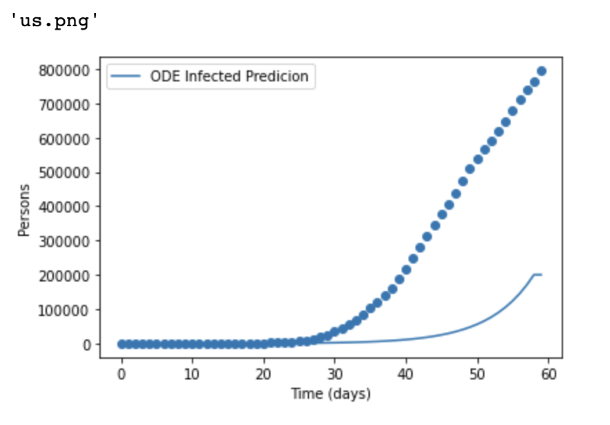
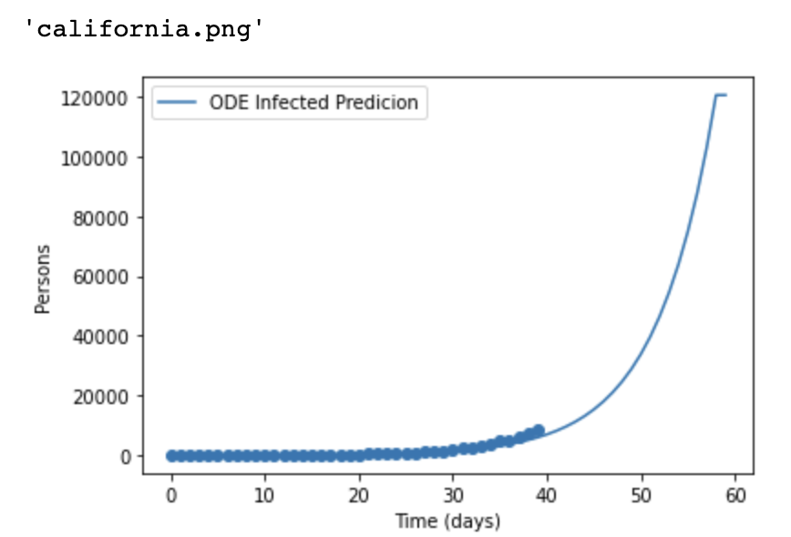
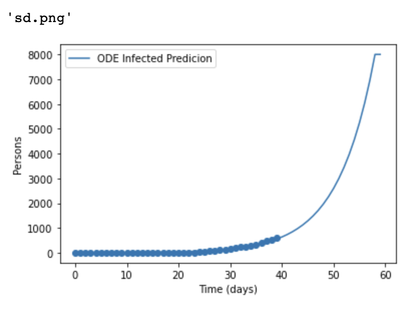

Fitting Epidemiology Model with Covid-19 JHU U.S. Data
Project is created with:
pip install -r requirements.txt to install all the required packagespython run.py data to retrieve the most current data from JHU & Apple Datapython run.py test to start
Given:
$$\xi = \frac{1}{D} $$ $$f_s(I_n,N,S_n) = -\beta\left(\frac{I_n}{N}\right) S_n$$ $$f_I(I_n,N,S_n) = - I\xi + \beta\left(\frac{I_n}{N}\right) S_n$$ $$f_R(I_n) = I_n\xi$$ $$h=1$$
Plug the above values into
$\frac{1}{N}$ $\sum_{n=1}^N \nabla_{\theta}$ (($\frac{s(n+1)-s(n)}{h} - f_s(s(n)$ $I(n), R(n)$; $\theta ))^2$ + (($\frac{I(n+1)-I(n)}{h} - f_I(s(n)$ $I(n), R(n)$; $\theta ))^2$ + ....
To calculate the above the term, we need to use chain rule to differentiate with respect to $\beta$ and $\xi$
$\nabla_{\beta} = 2 \cdot \left(\frac{S_{n+1} - S_{n}}{h} - \left(-\beta S_n \frac{I_n}{N}\right) \right) \cdot \left(S_n \cdot \frac{I_n}{N}\right) + 2 \cdot \left(\frac{I_{n+1} - I_{n}}{h} - \left( -\xi_k I_n + \beta_k \frac{I_n}{N} S_n \right)\right) \cdot \left( -S_n \cdot \frac{I_n}{N}\right)$
$\nabla_{\xi} = 2 \cdot \left(\frac{I_{n+1} - I_{n}}{h} + \left(I_n\xi_k - \beta_k \frac{I_n}{N}S_n\right) \right) \cdot \left(I_n\right) + 2 \cdot \left(\frac{R_{n+1} - R_{n}}{h} - I_n\xi_k\right) \cdot \left( -I_n\right)$
$\nabla_{\beta} = 2 \cdot \left(\frac{S_{n+1} - S_{n}}{h} - \left(-\beta_{k} S_n \frac{I_n}{N}\right) \right) \cdot \left(S_n \cdot \frac{I_n}{N}\right) + 2 \cdot \left(\frac{I_{n+1} - I_{n}}{h} - \left( -\xi_k I_n + \beta_k \frac{I_n}{N} S_n \right)\right) \cdot \left( -S_n \cdot \frac{I_n}{N}\right)$
$\nabla_{\xi} = 2 \cdot \left(\frac{I_{n+1} - I_{n}}{h} + \left(I_n\xi_k - \beta_k \frac{I_n}{N}S_n\right) \right) \cdot \left(I_n\right) + 2 \cdot \left(\frac{R_{n+1} - R_{n}}{h} - I_n\xi_k\right) \cdot \left( -I_n\right)$
We can calculate the hessian matrix given s,i arrays and population
$ \begin{aligned} \frac{\partial \nabla_{\beta}}{\partial \beta} &= \frac{1}{N} \sum_{n=1}^N \left(2\cdot \left(S_{n}\cdot \frac{I_{n}}{N}\right)^2 + 2\cdot \left(S_{n} \cdot \frac{I_{n}}{N}\right) ^2\right) \ &= \frac{1}{N} \sum_{n=1}^N \left(4\cdot \left(S_{n}\cdot \frac{I_{n}}{N}\right)^2\right) \end{aligned}$
$\begin{aligned} \frac{\partial \nabla_{\xi}}{\partial \xi} &= \frac{1}{N} \sum_{n=1}^N \left(2\cdot I_{n} ^2 + 2\cdot I_{n} ^2\right) \ &= \frac{1}{N} \sum_{n=1}^N 4\cdot I_{n} ^2 \end{aligned}$
$ \begin{aligned} \frac{\partial \nabla_{\xi}}{\partial_{\beta}} &= \frac{1}{N} \sum_{n=1}^N -2 \cdot S_{n}\cdot \frac{I_{n}^2}{N} \ & = \frac{\partial \nabla_{\beta}}{\partial_{\xi}} \end{aligned}$
We then use numpy.lin.eg to get the eigen value of the hessian matrix
We applied our methods to south California. We obtained the following results:At US country level (Figure 1), the model is underestimating the number of cases. At state and countylevel (Figure 2 and Figure 3), the model is overestimating the number of cases.


